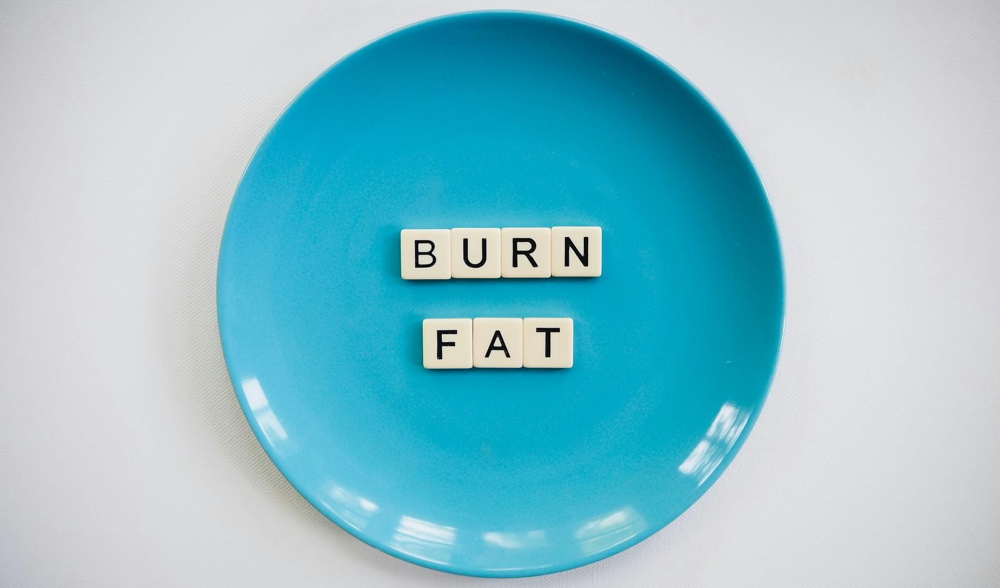

This is probably the oldest diet debate in existence, and both sides have decades of bestselling books behind them. The research question has actually been answered fairly conclusively — but the answer isn't the dramatic verdict either camp wants, and understanding why explains a lot about how diets actually work.
What the head-to-head research actually shows
Multiple large, well-controlled studies directly comparing low-carb and low-fat diets at matched calorie intake consistently find similar weight loss between the two approaches over 6-12 months. This includes the well-known DIETFITS trial, which found no significant difference in weight loss between low-carb and low-fat groups despite very different macronutrient compositions. The headline finding across this research is consistent: at equal calories, macronutrient split matters far less for weight loss than popular diet culture suggests.
Why low-carb diets often look faster at first
Carb restriction depletes glycogen (stored carbohydrate) in muscles and liver, and each gram of glycogen is stored with roughly 3 grams of water. Cutting carbs releases this water quickly, producing a rapid initial drop on the scale that looks dramatic but isn't fat loss — it's water weight, and it plateaus within one to two weeks once glycogen stores stabilise at a lower level. This is a genuine motivational advantage for adherence in the crucial early weeks, even though it doesn't reflect the true rate of fat loss going forward.
Satiety: where individual response varies most
This is where the honest answer becomes "it depends on you specifically" rather than one approach being universally better. Higher protein and fat intake (common on low-carb plans) increases satiety hormones for many people, reducing hunger between meals. Others find that adequate fibre from carbohydrate-rich whole foods (common on low-fat, higher-carb plans) provides similar or better fullness through volume and slower digestion. Neither response is more "correct" — it's genuinely individual.
Metabolic health markers
Low-carb diets often produce faster improvements in triglycerides and HDL cholesterol in the short term, while low-fat diets sometimes show larger reductions in LDL cholesterol, particularly the more atherogenic subtypes. Both patterns generally improve most metabolic markers over time when weight loss occurs, and the specific magnitude of improvement in any one marker matters less than sustained adherence to whichever pattern you choose.
Sustainability is the deciding factor
Since both approaches produce similar weight loss at matched calories, the real-world differentiator becomes which one you can actually sustain. Diets that eliminate entire food categories you enjoy tend to have higher dropout rates regardless of which macronutrient is restricted — the "best" diet, in the practical sense, is reliably the one whose food list you don't dread.
Practical considerations for each approach
Low-carb approaches tend to simplify decision-making for some people (fewer food categories to consider) and can reduce hunger for those who respond well to higher protein and fat. Low-fat, higher-carb approaches tend to allow more social flexibility (bread, rice, and pasta remain on the table) and are often easier to sustain for endurance athletes with high carbohydrate demands for training.
Which should you choose?
Given the similar weight loss outcomes at matched calories, choose based on which foods you can restrict without constant deprivation, which pattern controls your hunger better personally, and which fits your training demands and social life. There's no metabolic reason to force yourself into whichever approach is currently trending if the other genuinely suits you better.
Frequently asked questions
Does cutting carbs burn more fat than cutting fat?
Not meaningfully — at matched calorie deficits, research consistently shows similar fat loss between low-carb and low-fat approaches, regardless of which macronutrient is restricted.
Why do low-carb diets often show faster initial weight loss?
Much of the faster initial drop is water weight, released as the body depletes glycogen stores, which bind water. This isn't fat loss and levels out after the first one to two weeks.
Which diet is easier to stick to long-term?
This varies by individual — some people find carb restriction reduces cravings and hunger, while others find a higher-carb, lower-fat approach more sustainable and less restrictive socially.
Is one diet healthier than the other?
Both can be healthy or unhealthy depending on food quality within the approach — a low-carb diet built on processed meat isn't healthier than a low-fat diet built on whole foods, and vice versa.